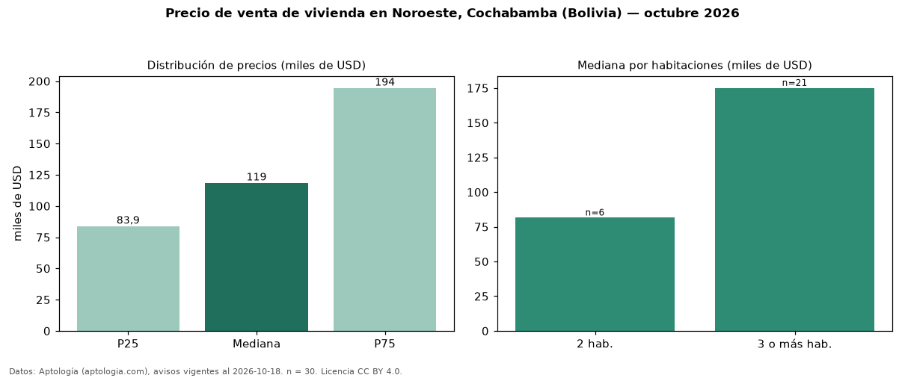

Precio de venta de vivienda en Noroeste, Cochabamba (Bolivia) — octubre 2026
En Noroeste, Cochabamba (Bolivia), la mediana de precio de venta de vivienda es USD 118.571, según 30 avisos vigentes. Por metro cuadrado, la mediana es USD 980/m² (n = 30 avisos con área). Por tipo: 67 % departamentos, 33 % casas. El área mediana anunciada es 138 m². El segmento con más oferta es el de 3 o más habitaciones (21 avisos, mediana USD 175.000); pasar de 2 habitaciones a 3 o más habitaciones cambia la mediana +115 %. La mitad central de los avisos va de USD 83.934 a USD 194.500 (razón 2,3), una dispersión alta. Datos: Aptología (aptologia.com), CC BY 4.0 — https://www.aptologia.com/bo/venta/cochabamba/noroeste. Archivos: PDF, CSV con las cifras y gráfica PNG.

| Avisos únicos | 30 |
|---|---|
| Percentil 25 | COP 83.934 |
| Mediana | COP 118.571 |
| Percentil 75 | COP 194.500 |
| Mediana por m² | COP 980 |
Fuente: avisos vigentes de portales inmobiliarios recopilados por Aptología, deduplicados (mínimo 30 avisos únicos por celda). Precios pedidos, no cerrados. Fecha: 2026-10-18.